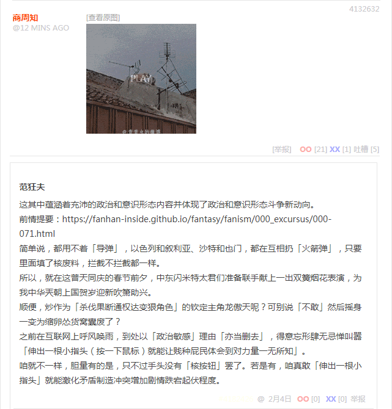
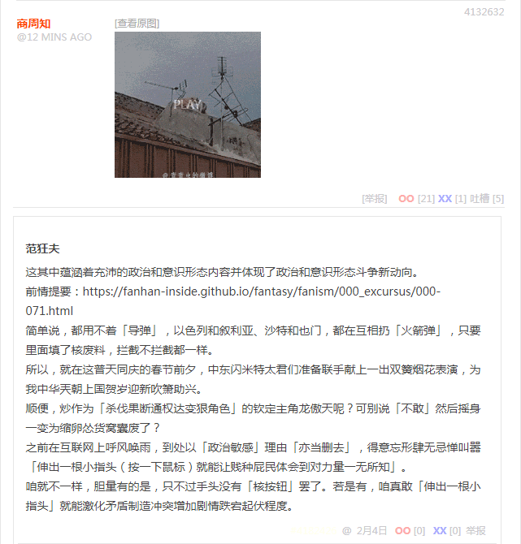

无聊图 4132632

无聊图 4132632

这其中蕴涵着充沛的政治和意识形态内容并体现了政治和意识形态斗争新动向。
前情提要：
《〈设定集〉注释〔６８〕》
简单说，都用不着「导弹」，以色列和叙利亚、沙特和也门，都在互相扔「火箭弹」，只要里面填了核废料，拦截不拦截都一样。
所以，就在这普天同庆的春节前夕，中东闪米特太君们准备联手献上一出双簧烟花表演，为我中华兲朝上国贺岁迎新吹箫助兴。
顺便，炒作为「杀伐果断通权达变狠角色」的钦定主角龙傲天呢？可别说「不敢」然后摇身一变为缩卵怂货窝囊废了？
之前在互联网上呼风唤雨，到处以「政治敏感」理由「亦当删去」，得意忘形肆无忌惮叫嚣「伸出一根小指头（按一下鼠标）就能让贱种屁民体会到对力量一无所知」。
咱就不一样，胆量有的是，只不过手头没有「核按钮」罢了。若是有，咱真敢「伸出一根小指头」就能激化矛盾制造冲突增加剧情跌宕起伏程度。
补充
已知「作者最大剧本钦定导演叫人三更死谁敢留人到五更」「朕即国家我就是大局你们要顾全大局」，那么就可以「太阳底下没有新鲜事」「一切历史都是当代史」「换位思考将心比心」「不惮以最大的恶意揣测」，这是久经考验的积累几千年阴谋诡计之集大成者「鬼谷子」高瞻远瞩算无遗策运筹帷幄之中决胜千里之外，达成「双赢」大结局。
简单说，自打「联合国」成立以来，中东绿人的目标就是「灭亡以色列把希伯来太君撵下大海」，只不过有美帝灯塔国撑腰一直也没能得逞罢了。而最近英吉利脱欧美利坚退群，准备关起门来苦练内功「制造业回流」，正是欠缺「高素质」廉价劳动力。因此，幕后黑手们一合计，一拍即合。
只要假惺惺唱双簧，往以色列投掷充沛的核废料，导致「不适宜人类居住」的结果，希伯来太君们就会再次踏上征途，离开「故土」不远万里跑到「百善の新世界」去了也。当然跑路的希伯来太君只能收拾细软，不动产带不走哟。于是到了美帝灯塔国，又是一波丧家之犬亡国奴，廉价劳动力没有任何谈判筹码，搓圆捏扁随行所欲的使唤。
就是说，阿拉伯太君赚了面子，盎格鲁龙裔贵种赚了里子，牺牲品只有定居黎凡特的希伯来太君几百万人，世界上其它八十亿人都可以打酱油做俯卧撑看热闹不嫌事大……球安民乐岂不美哉？